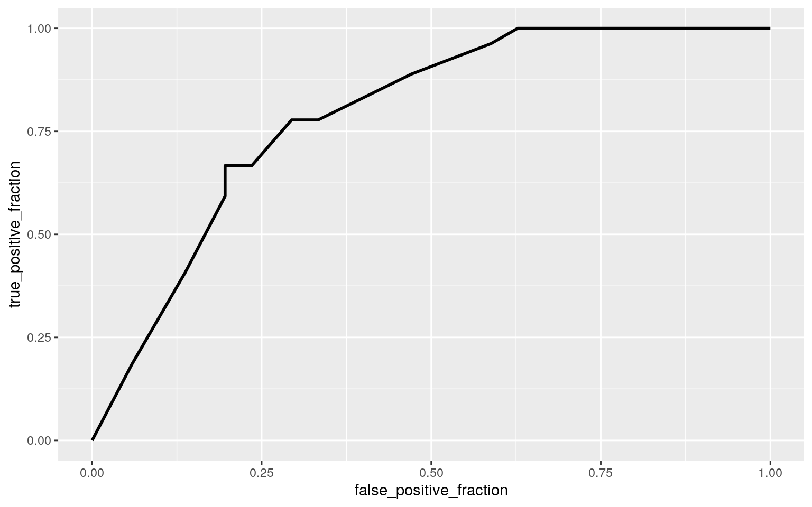

#load packages
library(tidyverse)
library(dplyr)
library(tidyr)
library(readxl)
#import datasets
characterstats <- read_excel("character stats.xlsx")
categoricalstats <- read_excel("more smash data.xlsx")
#join data
smashdata <- full_join(characterstats, categoricalstats)
#rename columns
smashdata <- smashdata %>% rename(air.speed = "Air Speed")
smashdata <- smashdata %>% rename(walk.speed = "Walk Speed")
smashdata <- smashdata %>% rename(dash.speed = "Dash Speed")
smashdata <- smashdata %>% rename(run.speed = "Run speed")
smashdata <- smashdata %>% rename(grab.range = "Grab Range")
smashdata <- smashdata %>% rename(grab.stun = "Grab, Shieldstun")#MANOVA assumptions
library(rstatix)
group <- smashdata$type
DVs <- smashdata %>% select(Weight, air.speed, walk.speed, run.speed, grab.range, grab.stun)
#Test multivariate normality for each group (null: assumption met)
#If any p<.05, stop.
sapply(split(DVs,group), mshapiro_test)## DLC new veteran
## statistic 0.452971 0.5931743 0.8041885
## p.value 4.135612e-06 9.414363e-05 2.055967e-07#manova test for mean difference across type of character
man1 <- manova(cbind(Weight, air.speed, walk.speed, dash.speed, run.speed, grab.range, grab.stun) ~ type, data = smashdata)
summary(man1)## Df Pillai approx F num Df den Df Pr(>F)
## type 2 0.31767 1.8883 14 140 0.03237 *
## Residuals 75
## ---
## Signif. codes: 0 '***' 0.001 '**' 0.01 '*' 0.05 '.' 0.1
' ' 1# 7 anova tests
summary.aov(man1)## Response Weight :
## Df Sum Sq Mean Sq F value Pr(>F)
## type 2 1301.1 650.55 3.7871 0.02711 *
## Residuals 75 12883.8 171.78
## ---
## Signif. codes: 0 '***' 0.001 '**' 0.01 '*' 0.05 '.' 0.1
' ' 1
##
## Response air.speed :
## Df Sum Sq Mean Sq F value Pr(>F)
## type 2 0.09937 0.049685 2.5906 0.08167 .
## Residuals 75 1.43843 0.019179
## ---
## Signif. codes: 0 '***' 0.001 '**' 0.01 '*' 0.05 '.' 0.1
' ' 1
##
## Response walk.speed :
## Df Sum Sq Mean Sq F value Pr(>F)
## type 2 0.2453 0.122644 2.8542 0.06387 .
## Residuals 75 3.2227 0.042969
## ---
## Signif. codes: 0 '***' 0.001 '**' 0.01 '*' 0.05 '.' 0.1
' ' 1
##
## Response dash.speed :
## Df Sum Sq Mean Sq F value Pr(>F)
## type 2 0.32554 0.162772 4.6057 0.01298 *
## Residuals 75 2.65059 0.035341
## ---
## Signif. codes: 0 '***' 0.001 '**' 0.01 '*' 0.05 '.' 0.1
' ' 1
##
## Response run.speed :
## Df Sum Sq Mean Sq F value Pr(>F)
## type 2 0.2902 0.14510 1.0017 0.3721
## Residuals 75 10.8632 0.14484
##
## Response grab.range :
## Df Sum Sq Mean Sq F value Pr(>F)
## type 2 52.0 26.001 0.4533 0.6373
## Residuals 75 4301.9 57.358
##
## Response grab.stun :
## Df Sum Sq Mean Sq F value Pr(>F)
## type 2 25.81 12.9043 1.6563 0.1978
## Residuals 75 584.35 7.7913#6 pairwise t (post-hoc)
pairwise.t.test(smashdata$Weight, smashdata$type, p.adj = "none")##
## Pairwise comparisons using t tests with pooled SD
##
## data: smashdata$Weight and smashdata$type
##
## DLC new
## new 0.968 -
## veteran 0.078 0.023
##
## P value adjustment method: nonepairwise.t.test(smashdata$dash.speed, smashdata$type, p.adj = "none")##
## Pairwise comparisons using t tests with pooled SD
##
## data: smashdata$dash.speed and smashdata$type
##
## DLC new
## new 0.682 -
## veteran 0.025 0.026
##
## P value adjustment method: none#bonferroni correction
.05/(1+7+6)## [1] 0.003571429#type 1 error
1-.95^14## [1] 0.512325For the MANOVA assumptions test the p-value for veteran was much less than 0.05, meaning we reject the null hypothesis that all population variances/covariances are equal across groups. Either way, proceeding with the manova test, it showed a significant p-value meaning there is at least one significant difference of the numerical variables across 2 or more of the groups. The anova tests showed more specific statistics in that weight and dash speed were significantly different among two or more of the groups. Using an alpha value of 0.05, the pairwise t-tests showed that weight differed between veteran vs. new characters and dash speed differed between veteran vs. DLC and veteran vs. new characters. With 14 tests conducted, the bonferroni correction would make the p-value 0.0036. Using this value would make none of the pairwise t-tests significant between any groups. The probability of a type 1 error is 0.5123.
#filter out characters that have both male and female customization options for play
smash2 <- smashdata %>% filter(Gender != "Selectable")
#Mutate to categorize characters into male or not male
smash2 <- smash2 %>% mutate(newgender = ifelse( Gender == "Male", "Male", "Not"))
#randomization test
meandiff <- vector()
for (i in 1:5000){
new <- data.frame(sampgender = sample(smash2$newgender), weight = smash2$Weight)
meandiff[i] <- mean(new[new$sampgender=="Male",]$weight) - mean(new[new$sampgender=="Not",]$weight)
}
#mean difference
smash2 %>% group_by(newgender) %>% summarise(meanwt = mean(Weight)) %>% summarize(diffmeans = diff(meanwt))## # A tibble: 1 x 1
## diffmeans
## <dbl>
## 1 -10.1#graph visualizing null distribution and test statistic
{hist(meandiff,main="",ylab=""); abline(v = c(-10.08, 10.08 ),col="red")}#calculate P-value
mean(meandiff > 10.08 | meandiff < -10.08)## [1] 0.0034A randomization test of mean difference was conducted. The null hypothesis is that the mean weights are the same for male vs non-male characters and the alternate hypothesis is that the two mean weights statistically differ. With a p-value of 0.0052 we can reject the null hypothesis and conclude that the two groups differ in weight.
#new dataset for new part of project
smash3 <- smash2
#center grab post stun values and air speed
smash3$stun_c <- smash3$grab.stun - mean(smash3$grab.stun, na.rm = T)
#linear regression
smashstuff <- lm(air.speed ~ stun_c * type, data = smash3)
summary(smashstuff) #note of adjusted r squared##
## Call:
## lm(formula = air.speed ~ stun_c * type, data = smash3)
##
## Residuals:
## Min 1Q Median 3Q Max
## -0.34951 -0.08549 0.00916 0.08141 0.26200
##
## Coefficients:
## Estimate Std. Error t value Pr(>|t|)
## (Intercept) 0.94576 0.05673 16.671 <2e-16 ***
## stun_c -0.01722 0.01967 -0.875 0.3846
## typenew 0.08427 0.07399 1.139 0.2589
## typeveteran 0.13871 0.06009 2.308 0.0242 *
## stun_c:typenew 0.00825 0.02388 0.345 0.7309
## stun_c:typeveteran 0.01680 0.02107 0.797 0.4281
## ---
## Signif. codes: 0 '***' 0.001 '**' 0.01 '*' 0.05 '.' 0.1
' ' 1
##
## Residual standard error: 0.1438 on 65 degrees of freedom
## Multiple R-squared: 0.09849, Adjusted R-squared: 0.02914
## F-statistic: 1.42 on 5 and 65 DF, p-value: 0.2288#plot the regression
ggplot(smash3, aes(air.speed, stun_c)) + geom_point(aes(color = type)) + geom_smooth(method = "lm", aes(color = type))#check linearity through scatterplot
plot(smash3$air.speed, smash3$stun_c)#test normality using shapiro-wilk test
resids <- lm(air.speed ~ stun_c, data = smash3)$residuals
shapiro.test(resids)##
## Shapiro-Wilk normality test
##
## data: resids
## W = 0.98551, p-value = 0.5888#check homoskedasticity using breuch-pagan test
library(lmtest)
bptest(smashstuff)##
## studentized Breusch-Pagan test
##
## data: smashstuff
## BP = 6.4759, df = 5, p-value = 0.2626#robust standard errors
library(sandwich)
coeftest(smashstuff, vcov = vcovHC(smashstuff))##
## t test of coefficients:
##
## Estimate Std. Error t value Pr(>|t|)
## (Intercept) 0.9457603 0.1064823 8.8819 8e-13 ***
## stun_c -0.0172193 0.0529781 -0.3250 0.7462
## typenew 0.0842726 0.1172170 0.7189 0.4748
## typeveteran 0.1387056 0.1087217 1.2758 0.2066
## stun_c:typenew 0.0082499 0.0550530 0.1499 0.8813
## stun_c:typeveteran 0.0167997 0.0539230 0.3116 0.7564
## ---
## Signif. codes: 0 '***' 0.001 '**' 0.01 '*' 0.05 '.' 0.1
' ' 1A DLC character with an average post grab stun would on average have an airspeed of 0.946. For every 1 increase in post grab stun from the average, the air speed on average would go down by 0.0172. New characters have an average air speed of 0.084 greater than DLC characters and veteran characters would have an average of 0.1387 greater air speed than DLC characters. 0.00825 is the estimated slope for stun_c on air speed for new characters and 0.0168 is the estimated slope for stun_c on air speed for veteran characters. Because the p-value of 0.59 surpasses 0.05 the data passes the shapiro-wilk test and therefore proves normality. The data also passed the Breusch-Pagan test with a p-value of 0.2626 proving homoskedasticity. However, the linearity assumptions seems to be violated because the scatterplot does not show a relationship between the variables. Before using robust standard errors the veteran group had a significant p-value but after using robust standards errors this value is no longer significant. The R-squared values show what proportion of the variation in the outcome your model explains, which is 0.02914.
#bootstrap by residuals
#fit model
fit4<-lm(air.speed ~ stun_c*type,data=smash3)
#save residuals
resids<-fit4$residuals
#save yhats
fitted<-fit4$fitted.values
resid_resamp<-replicate(5000,{
new_resids<-sample(resids,replace=TRUE) #resample resids w/ replacement
smash3$new_y<-fitted+new_resids #add new resids to yhats to get new "data"
bsfit<-lm(new_y~stun_c*type,data=smash3) #refit model
coef(bsfit) #save coefficient estimates (b0, b1, etc)
})
#SD
resid_resamp%>%t%>%as.data.frame%>%summarize_all(sd)## (Intercept) stun_c typenew typeveteran stun_c:typenew
stun_c:typeveteran
## 1 0.05402724 0.01885079 0.07045565 0.05697307 0.02268457
0.02030431Compared to the original standard errors (SE) the bootstrapped SEs very similar, just smaller by the slightest. This means the two sets of data would have similar p-values. However, the robust SEs almost double that of the bootstrapped SEs which also means the p-value would be different.
#first create binary variable
#chunk characters into weight categories, 1 means heavy weight, 0 means not
smashtest <- smashdata %>% mutate(y = ifelse(Weight > 100, 1, 0))
#fit logistic regression model
fitsmashtest <- glm(y ~ Gender + Tier, data = smashtest, family = binomial(link = "logit"))
summary(fitsmashtest)##
## Call:
## glm(formula = y ~ Gender + Tier, family = binomial(link
= "logit"),
## data = smashtest)
##
## Deviance Residuals:
## Min 1Q Median 3Q Max
## -1.6800 -0.7610 -0.3651 0.9537 1.7292
##
## Coefficients:
## Estimate Std. Error z value Pr(>|z|)
## (Intercept) -2.62661 1.20122 -2.187 0.0288 *
## GenderMale 1.48251 0.92622 1.601 0.1095
## GenderNeutral 0.17874 1.25345 0.143 0.8866
## GenderSelectable -0.44170 1.45027 -0.305 0.7607
## TierB 1.38797 1.05036 1.321 0.1864
## TierC 1.69610 0.99122 1.711 0.0871 .
## TierD 0.05300 1.04675 0.051 0.9596
## TierE 2.27585 1.05852 2.150 0.0316 *
## TierF -16.13052 1903.63942 -0.008 0.9932
## TierS -0.09712 1.38786 -0.070 0.9442
## ---
## Signif. codes: 0 '***' 0.001 '**' 0.01 '*' 0.05 '.' 0.1
' ' 1
##
## (Dispersion parameter for binomial family taken to be 1)
##
## Null deviance: 100.625 on 77 degrees of freedom
## Residual deviance: 78.734 on 68 degrees of freedom
## AIC: 98.734
##
## Number of Fisher Scoring iterations: 16#confusion table
probability <- predict(fitsmashtest, type = "response")
predicted <- ifelse(probability > 0.5, 1, 0)
table(truth = smashtest$y, prediction = predicted) %>% addmargins## prediction
## truth 0 1 Sum
## 0 41 10 51
## 1 11 16 27
## Sum 52 26 78#accuracy
(41 + 16)/78## [1] 0.7307692#sensitivity
16/26## [1] 0.6153846#specitivity
41/52## [1] 0.7884615#precision
16/27## [1] 0.5925926#density plot
smashdensity <- smashtest
smashdensity$y <- as.factor(smashdensity$y)
smashdensity$logit<-predict(fitsmashtest, type = "link")
smashdensity %>% ggplot() + geom_density(aes(logit, color = y, fill = y), alpha = .3) + geom_vline(xintercept = 0) + xlab("logit values") + xlim(-5,5)#ROC plot
library(plotROC)
rocplot <- ggplot(smashtest) + geom_roc(aes(d = y, m = probability), n.cuts = 0)
rocplot
#calculate AUC
calc_auc(rocplot)## PANEL group AUC
## 1 1 -1 0.7915759Female characters who are in tier A have a log odds of -2.62661 of being a heavyweight character. In regard to genders, a character being male changes the log odds by 1.483, being neutral changes this by 0.179 and being selectable changes this by -0.442. Being in tier B, C, D, E, F, and S changes these log odds by 1.388, 1.696, 0.053, 2.275, -16.131, and 0.097 respectively. The accuracy, sensitivity, specitivity, and precision values are 0.731, 0.615, 0.788, and 0.593 respectively. The AUC of the ROC plot is 0.792 which is on the higher end of the "fair" range.
#take out repeated variables
smashtest2 <- smashtest %>% select(Tier, grab.stun, grab.range, run.speed, walk.speed, air.speed, y, dash.speed, type, Gender)
#fit model with all variables
prob <- glm(y ~ (.), data = smashtest2, family = "binomial")
#class diag function
class_diag <- function(probs,truth){
#CONFUSION MATRIX: CALCULATE ACCURACY, TPR, TNR, PPV
if(is.character(truth)==TRUE) truth<-as.factor(truth)
if(is.numeric(truth)==FALSE & is.logical(truth)==FALSE) truth<-as.numeric(truth)-1
tab<-table(factor(probs>.5,levels=c("FALSE","TRUE")),factor(truth, levels=c(0,1)))
acc=sum(diag(tab))/sum(tab)
sens=tab[2,2]/colSums(tab)[2]
spec=tab[1,1]/colSums(tab)[1]
ppv=tab[2,2]/rowSums(tab)[2]
f1=2*(sens*ppv)/(sens+ppv)
#CALCULATE EXACT AUC
ord<-order(probs, decreasing=TRUE)
probs <- probs[ord]; truth <- truth[ord]
TPR=cumsum(truth)/max(1,sum(truth))
FPR=cumsum(!truth)/max(1,sum(!truth))
dup<-c(probs[-1]>=probs[-length(probs)], FALSE)
TPR<-c(0,TPR[!dup],1); FPR<-c(0,FPR[!dup],1)
n <- length(TPR)
auc<- sum( ((TPR[-1]+TPR[-n])/2) * (FPR[-1]-FPR[-n]) )
data.frame(acc,sens,spec,ppv,f1,auc)
}
#use function on data
probs <- predict(prob, type = "response")
class_diag(probs, smashtest2$y)## acc sens spec ppv f1 auc
## 1 0.8589744 0.8148148 0.8823529 0.7857143 0.8 0.9259259#perform 10-fold
set.seed(1234)
k = 10
data1<-smashtest2[sample(nrow(smashtest2)),] #put dataset in random order
folds<-cut(seq(1:nrow(smashtest2)),breaks=k,labels=F) #create folds
diags<-NULL
for(i in 1:k){ # FOR EACH OF 10 FOLDS
train<-data1[folds!=i,] # CREATE TRAINING SET
test<-data1[folds==i,] # CREATE TESTING SET
truth<-test$y
fit<- glm(y ~ (.), data = train, family="binomial")
probs<- predict(fit, newdata = test, type="response")
diags<-rbind(diags,class_diag(probs,truth)) #CV DIAGNOSTICS FOR EACH FOLD
}
summarize_all(diags,mean) #AVERAGE THE DIAGNOSTICS ACROSS THE 10 FOLDS## acc sens spec ppv f1 auc
## 1 0.7464286 NaN 0.8270238 0.6416667 NaN 0.7083333#perform LASSO
library(glmnet)
set.seed(1234)
response = as.matrix(smashtest2$y)
#predictor variable matrix, drop first column
smash_preds = model.matrix(y ~ ., data = smashtest2)[, -1]
#cross validation
cv <- cv.glmnet(smash_preds, response, family = "binomial")
lasso_fit <- glmnet(smash_preds, response, family = "binomial", lambda = cv$lambda.1se)
head(lasso_fit)## $a0
## s0
## 0.0009324011
##
## $beta
## 17 x 1 sparse Matrix of class "dgCMatrix"
## s0
## TierB .
## TierC .
## TierD .
## TierE .
## TierF .
## TierS .
## grab.stun .
## grab.range .
## run.speed .
## walk.speed -0.4258594
## air.speed .
## dash.speed .
## typenew .
## typeveteran -0.2231894
## GenderMale .
## GenderNeutral .
## GenderSelectable .
##
## $df
## [1] 2
##
## $dim
## [1] 17 1
##
## $lambda
## [1] 0.1344729
##
## $dev.ratio
## [1] 0.04254539#create dataset with only lasso variables.
smashtest3 <- smashtest2 %>% mutate(veteran = ifelse(type == "veteran", 1, 0)) %>% select(y, walk.speed, veteran)
#set data up for 10-fold
data1<-smashtest3[sample(nrow(smashtest3)),] #put dataset in random order
folds<-cut(seq(1:nrow(smashtest3)),breaks=k,labels=F) #create folds
#10 fold with lasso variables only
diags<-NULL
for(i in 1:k){ # FOR EACH OF 10 FOLDS
train<-data1[folds!=i,] # CREATE TRAINING SET
test<-data1[folds==i,] # CREATE TESTING SET
truth<-test$y
fit<- glm(y ~ (.), data = train, family="binomial")
probs<- predict(fit, newdata = test, type="response")
diags<-rbind(diags,class_diag(probs,truth)) #CV DIAGNOSTICS FOR EACH FOLD
}
summarize_all(diags,mean) #AVERAGE THE DIAGNOSTICS ACROSS THE 10 FOLDS## acc sens spec ppv f1 auc
## 1 0.7214286 0.44 0.867381 NaN NaN 0.776875With the first logistic regression the accuracy, sensitivity, specitivity, precision, and AUC values are 0.859, 0.814, 0.882, 0.786, and 0.926 respecively. These are pretty good values, and an AUC of 0.926 is classified as great! After a 10-fold CV is performed the accuracty, sensitivity, specitivity, precision, and AUC values are 0.746, NA, 0.827, 0.642, and 0.70833 respecively. All of these values are smaller than the in-sample classification diagnostics. The decrease in AUC shows signs of over-fitting. After LASSO was performed the only non-zero coefficients are walk speed and type veteran. Using a 10-fold of only LASSO variables the AUC is 0.777, which is lower than the in-sample classification but higher than the 10-fold CV before LASSO was conducted.
data(package = .packages(all.available = TRUE))...